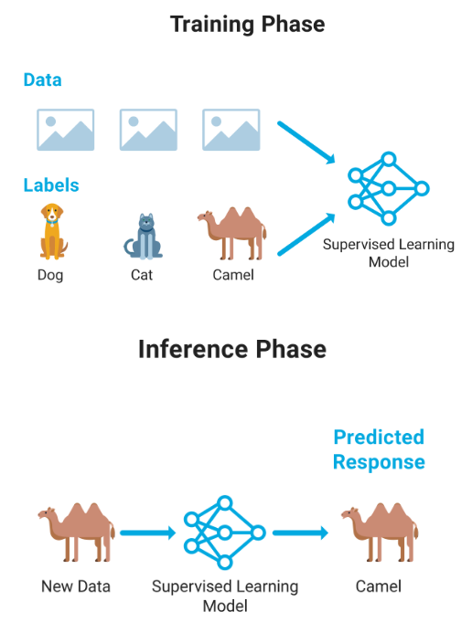
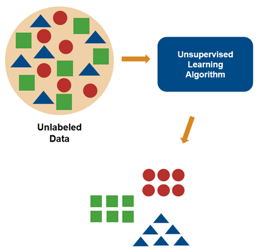
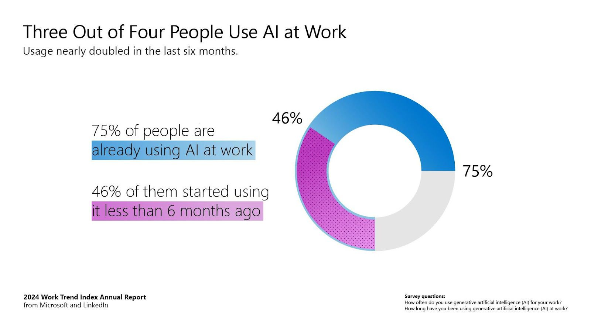
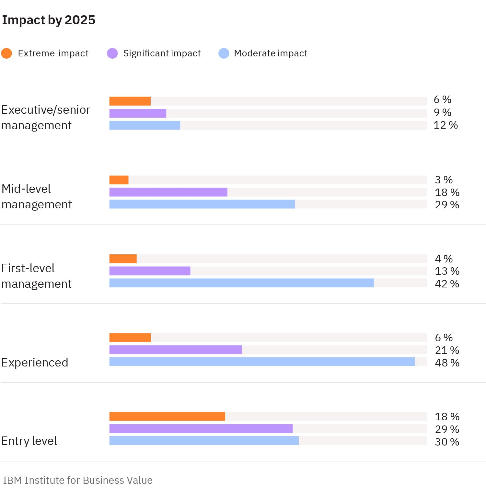

¿Qué es el machine learning?
El aprendizaje automático representa una de las transformaciones más profundas de la tecnología moderna: por primera vez, las máquinas no solo ejecutan instrucciones, sino que aprenden de la experiencia, detectan patrones que nosotros pasamos por alto y adaptan su comportamiento con cada nuevo dato que encuentran. Lo que antes se programaba manualmente, línea por línea, ahora surge de millones de ejemplos que moldean modelos capaces de comprender, predecir y generar información.
Hoy, el ML sostiene avances que hace una década parecían ciencia ficción. Puede analizar imágenes médicas para detectar enfermedades en etapas tempranas, entender lenguajes humanos, crear obras artísticas originales, simular escenarios meteorológicos complejos o encontrar señales débiles del universo en enormes volúmenes de datos. Estos modelos descubren conexiones escondidas en lo caótico, ampliando nuestra capacidad de mirar más lejos, comprender mejor y actuar con mayor precisión.
Pero lo realmente fascinante no es solo lo que pueden hacer, sino cómo aprenden a hacerlo. Un modelo no absorbe información como lo haría una persona; construye representaciones matemáticas que capturan la esencia de aquello que observa. Para nosotros, esa esencia puede ser abstracta. Para la máquina, es el mapa con el que navega el mundo. Y aunque la inteligencia que desarrolla no es humana, sí es complementaria: revela patrones que no sabíamos que estaban ahí y nos obliga a replantear nuestras propias formas de entender la realidad.
Explorar el aprendizaje automático es ingresar a un punto de encuentro entre ciencia, ingeniería y creatividad. Es preguntarnos qué puede aprender una máquina, qué debería aprender y cómo garantizar que ese aprendizaje contribuya a un futuro responsable, justo y transformador. El objetivo de este material extendido es guiarte por esa frontera, mostrando ejemplos sorprendentes, conceptos clave y aplicaciones que hoy están cambiando la manera en que resolvemos problemas complejos.
Aprendizaje Supervizado
Modelos aprenden con ejemplos etiquetados para clasificacion o regresión. Requiere etiquetas representativas. Buenas prácticas: particionar datos y usar validación cruzada.
Aprendizaje No Supervizado
Sin necesidad de que nadie le diga qué buscar, el aprendizaje no supervizado encuentra patrones ocultos: agrupa genes similares, descubre comunidades en redes sociales y revela estructuras que ni los humanos habíamos notado.
Ejemplos cotidianos
1. Medicina que ve antes que nosotros
Algoritmos de ML analizan millones de imágenes astronómicas y encuentran galaxias y estructuras que jamás se habían catalogado.Lo sorprendente: identifican patrones que incluso los telescopios no habían señalado como relevantes.
2. Descubriendo galaxias ocultas
Modelos de visión artificial detectan cáncer de piel analizando fotos tomadas con un celular. En algunos casos, alcanzan precisiones comparables —y a veces superiores— a las de especialistas con años de experiencia.3. Creatividad artificial
Redes neuronales generan música original, mezclando estilos de distintas épocas y creando composiciones imposibles para un solo compositor humano.Lo sorprendente: no copian —aprenden el “lenguaje” de la música y producen obras nuevas.
4. Autos que aprenden del mundo real
Los vehículos autónomos entrenan con millones de horas de conducción simulado y real. Aprenden a anticipar peatones, interpretar señales y decidir con rapidez en rutas complejas.Lo sorprendente: su “experiencia” crece sin límites humanos.
5. Ciencia acelerada
Modelos avanzados predicen el plegamiento de proteínas, un problema que tardaba años en resolverse.Hoy puede hacerse en minutos.
Lo sorprendente: está transformando la biología y el desarrollo de medicamentos.
Su beneficio e impacto
En los ultimos años desde la introduccion de la IA generativa en el lejano inicio de 2020, se
ha visto un aumento en la cantidad de usuarios de estas mismas como se puede notar en esta
grafica.
De acuerdo a los datos, 3 de cada 4 personas ya usan la IA en el trabajo, de las cuales el 75% ya la usaba, y el 46% justo hace menos de 6 meses acaban de empezar a usarla.
Entre los mayores beneficios notables se encuentra el aumento de ingresos, datos aprovechados, mejor experiencia del cliente, mayor bienestar de los empleados, ventaja competitiva y mayor innovación. Lo que significa que al hacer uso de estas herramientas, las empresas pueden sacar el mayor provecho, maximizar ganancias y ahorrar recursos.
La implementación de las IAs en el entorno laboral ha causado el surgimiento de divisiones entre trabajadores y maquinas, se predecia en 2023 que las nuevas tecnologías alterarían 85 millones de trabajos globalmente entre 2020 y 2025, y al mismo tiempo crearia 97 millones de puestos de trabajo nuevos.
Esta grafica lo muestra de mejor manera, en ella las barras representan que tanto la IA ha influido en los puestos laborales.
De acuerdo a los datos, 3 de cada 4 personas ya usan la IA en el trabajo, de las cuales el 75% ya la usaba, y el 46% justo hace menos de 6 meses acaban de empezar a usarla.

Entre los mayores beneficios notables se encuentra el aumento de ingresos, datos aprovechados, mejor experiencia del cliente, mayor bienestar de los empleados, ventaja competitiva y mayor innovación. Lo que significa que al hacer uso de estas herramientas, las empresas pueden sacar el mayor provecho, maximizar ganancias y ahorrar recursos.
La implementación de las IAs en el entorno laboral ha causado el surgimiento de divisiones entre trabajadores y maquinas, se predecia en 2023 que las nuevas tecnologías alterarían 85 millones de trabajos globalmente entre 2020 y 2025, y al mismo tiempo crearia 97 millones de puestos de trabajo nuevos.
Esta grafica lo muestra de mejor manera, en ella las barras representan que tanto la IA ha influido en los puestos laborales.

Hallazgos y reflexión
El aprendizaje automático está logrando lo que antessolo imaginábamos: diagnosticar enfermedades con más precisión que un médico, predecir huracanes, componer música o detectar galaxias ocultas. Los modelos actuales aprenden con millones de ejemplos y continúan mejorando sin intervención humana. El verdadero desafío ya no es si pueden aprender, sino cómo guiarlos éticamente para que aprendan lo correcto.
Bibliografia
- Goodfellow, I., Bengio, Y., & Courville, A (2016). Deep learning. MIT Press.
- Esteva, A., Kuprel, B., Novoa, R. A., Ko, J., Swetter, S. M., Blau, H. M., & Thrun, S. (2017). Dermatologist-level classification of skin cancer with deep neural networks. Nature, 542(7639), 115–118.
- Jumper, J., Evans, R., Pritzel, A., Green, T., Figurnov, M., Ronneberger, O., ... & Hassabis, D. (2021). Highly accurate protein structure prediction with AlphaFold. Nature, 596(7873), 583–589.
- Beck, A., Suresh, A., & Ho, S. (2023). Machine learning in astronomy: A practical overview. Annual Review of Astronomy and Astrophysics, 61, 1–40.
- Downie, A., & Hayes, M. (2025, April 28). AI en el lugar de trabajo. IBM. https://www.ibm.com/mx-es/think/topics/ai-in-the-workplace
- The augmented workforce for an automated, AI-driven world. (2023, August 11). IBM. https://www.ibm.com/thought-leadership/institute-business-value/report/augmented-workforce
- MathWorks. (n.d.). Aprendizaje supervisado. MATLAB & Simulink. https://la.mathworks.com/discovery/supervised-learning.html
- MathWorks. (n.d.). What is unsupervised learning? MATLAB & Simulink. https://la.mathworks.com/discovery/unsupervised-learning.html